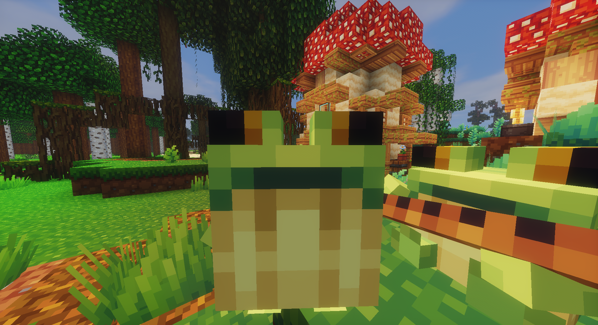
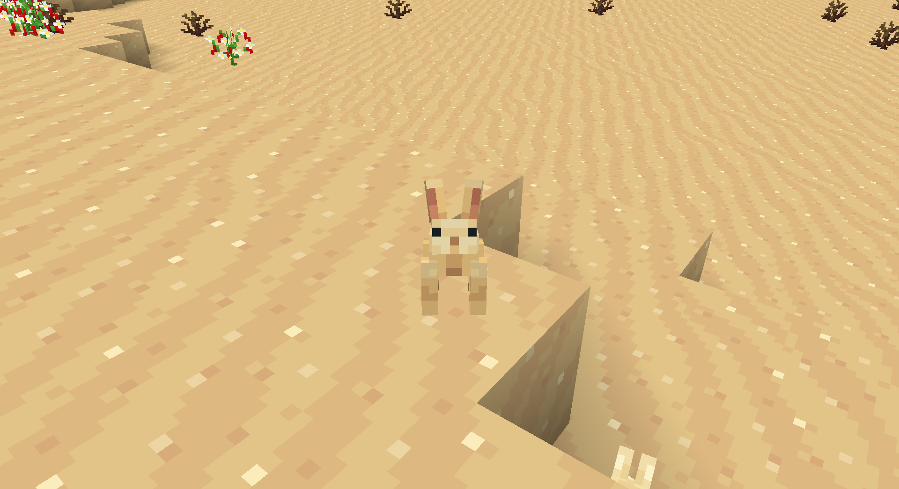

Basically
This is an attempt to optimize my modified BCG+ NC modpack for my forever world and the launch time, while also adding some unfixable mods that just crash when opening the world (Create Big Cannons for example).
Every mods are going to be decompiled to identify any memory leaks, or optimize any resource intensive part of the code.


Project stats
| Category | Stuff |
|---|---|
| Kind of project | private |
| Project status | active mint_duck is currently active on maintaining this |
| Github url | none |
| Total commit | 72 |
| Licence | none |